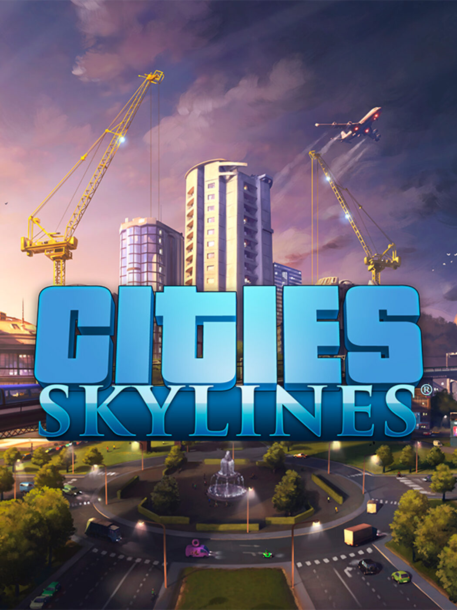
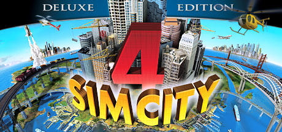
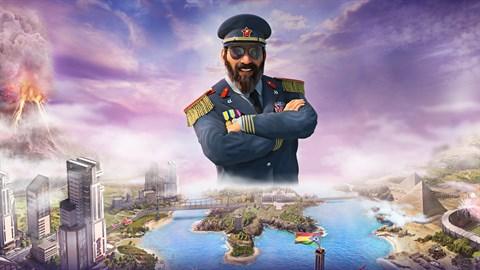
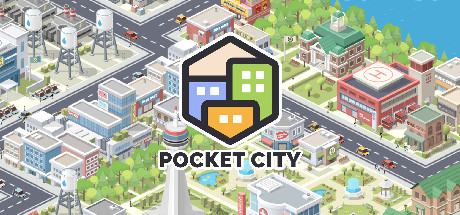
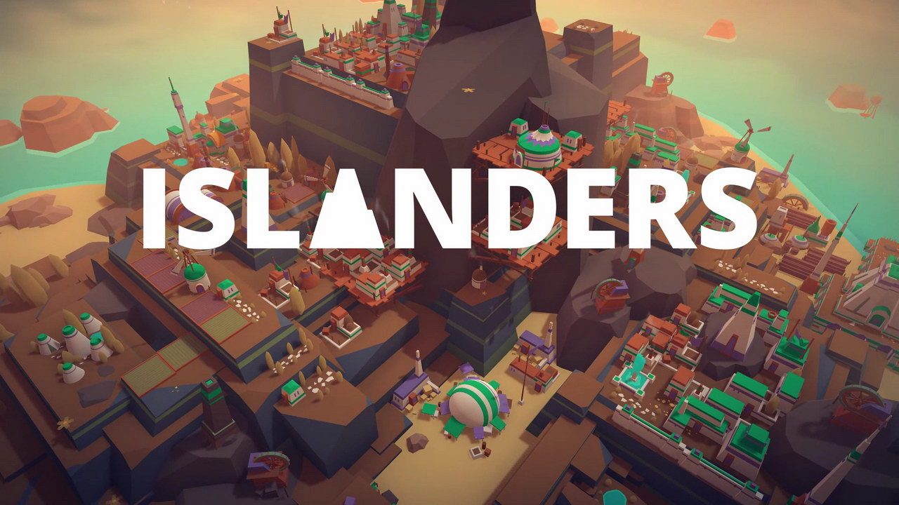

Os Principais

Cities: Skylines é um jogo de construção de cidade por excelência e o que recomendamos 100% se você estiver
procurando por um dos melhores (ou melhor) título do gênero. A quantidade de detalhes e liberdade que esse
jogo nos dá é incrível, seja para nos favorecer ou nos atrapalhar.

O SimCity 4 é, sem dúvida, um dos grandes titãs nos jogos de criação de cidades. Sua premissa é muito
semelhante a outros jogos do gênero, mas por baixo dessa primeira camada ele esconde uma riqueza profunda.
Ao longo do jogo, você não apenas deve construir e tornar suas cidades maiores, mas também manter seus
habitantes felizes. Caso contrário, eles irão embora!

Em Tropico 6 você desempenha o papel de administrador de ilhas no Caribe. Na verdade, você pode acabar
sendo um ditador. Mesmo em uma franquia tão boa, o sexto título conseguiu se superar e agora nos possibilita
governar diferentes ilhas e enfrentar desafios internacionais.

Pocket City é um excelente jogo do gênero que traz a experiência para os celulares. A jogabilidade não fica
para trás em relação aos jogos de outras plataformas. As ferramentas de construção são muito boas e, claro,
você tem que cuidar dos habitantes! Às vezes você experimentará desastres naturais e todas as suas
consequências.

Islanders não é o jogo mais completo do gênero, mas é um dos mais coloridos e relaxantes de todos. Se você
está procurando uma experiência minimalista em que explora belas ilhas e cria cidades no seu próprio ritmo,
este jogo é ideal para você. Realmente não tem muito conteúdo, mas com a geração aleatória de ilhas, você
certamente pode jogar muitas partidas diferentes entre si.